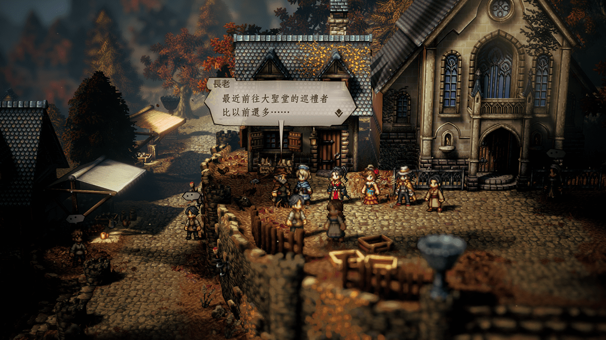
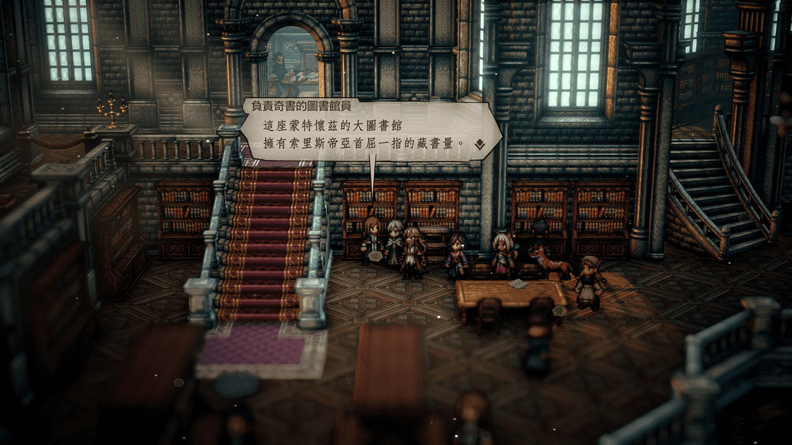
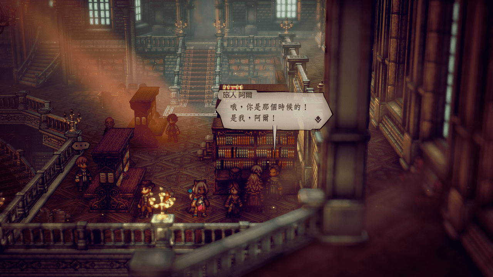
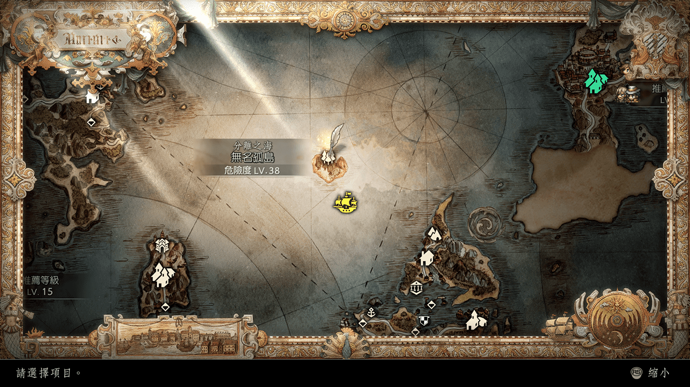
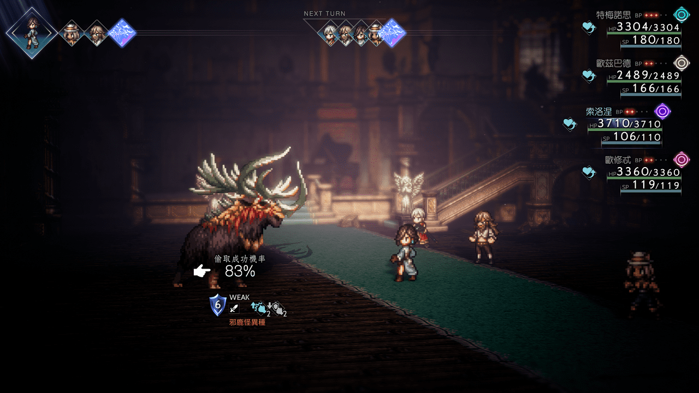
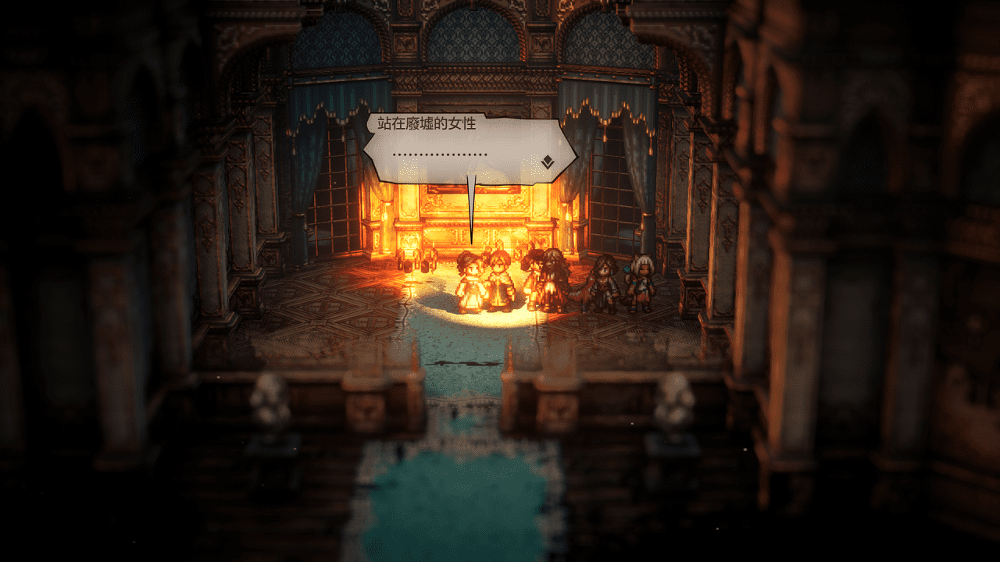
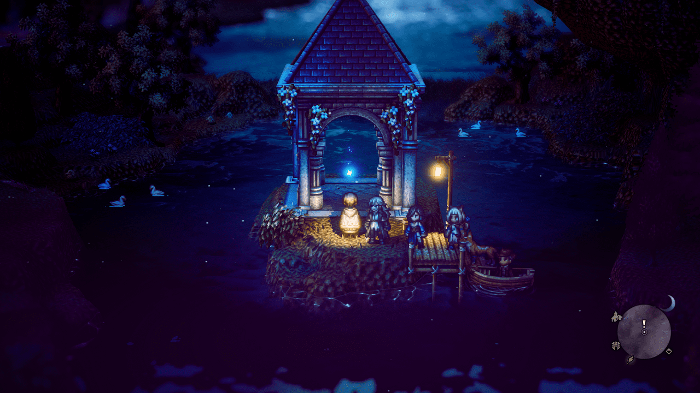
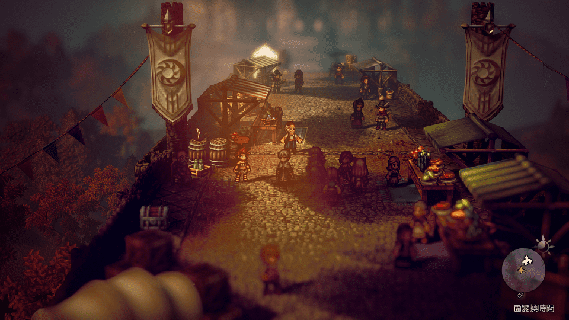

克雷斯特蘭多地區 Crestlands
NPC
弗雷姆恰奇/神官初始城
長老

Solution
買/取
城鎮神官身上的
聖火臘蠋
共三根
第一、二根在教堂附近的
男神官
、
女神官
身上
白天晚上位置不同 但都不會離太遠
第三根在村子裡往北走，經
巡禮路
到
弗雷姆恰奇-大聖堂前
找白天位在聖火前的
神官
Reward
5000元
增強物攻的堅果
增強物防的堅果
NPC
弗雷姆恰奇-大聖堂
神官
Solution
從NPC身上獲得
火、冰、雷、風 精靈石(特大)
各一顆
Reward
8000元
理力之杖 物攻+152、屬攻+214、屬防+88
NPC
蒙特懷茲
章魚研究員
Solution
對章魚有興趣的投資者在西大陸
柯林奎克
中酒館內
學者的老家/有海灘的城鎮
邀請他入隊
後直接帶回去找
章魚研究員
Reward
章魚人的壺甕 遇見章魚人機率提升
NPC
完成劍士第二章
蒙特懷茲
擔心的女性
Solution
鬥技場
與
懦弱的青年
比試/教唆/擊暈/安眠
四個人反應各不相同
之後會代替
懦弱的青年
參加戰鬥，無論輸贏都可完成任務
但挑戰成功可得
冠軍腰帶
物攻+100、暴擊+100、不會遭到敵人偷襲
若不幸這次挑戰輸掉，之後也可繼續挑戰，直到第一次勝利時都可得冠軍腰帶
另外完成任務後的再次挑戰將不再限制角色
此時可觀看裁判對於八名角色的登場介紹，並且可以無限刷
冠軍腰帶
Reward
2000元
恢復BP/潛力果實
NPC
蒙特懷茲-圖書館
負責奇書的圖書館員

Solution
收齊三大奇書
| 獸人島探訪記 | 杜杜赫赫島 百獸村 存檔點附近 來自島外的旅人 買/取 |
| 巨璧傳承奇譚 | 東大陸北方 南史東海爾 存檔點附近 考古學家 買/取 |
| 邊獄之書 | 西大陸右上 庫拉雷吉 村裡最右下角打倒擋門 學者 進屋後寶箱取得 |
Reward
6500元
恢復HP/SP的果醬
圖書館員的護身符 最大SP+120、屬防+120
NPC
完成支線世界三大奇書
蒙特懷茲-圖書館
旅人 阿爾

Solution
可回去圖書館左邊找
負責奇書的圖書館員
問到線索
順著線索提示在
無名之島
的深處找到
喬治
探/聽
得知
未知語言的解讀法
再把
未知語言的解讀法
告訴
旅人 阿爾
並觸發異界之門支線任務

Reward
4500元
某國的飾章 物防+100 屬防+100
NPC
梅利之丘-祭殿前
年輕收藏家
買/取
身上的
神秘的盒子
後觸發任務
Solution
從西大陸最左上的
廷貝倫
走出來，來到
南廷貝倫森道
之後往西走則可到達
威羅茲家的宅邸
進屋後推薦全程使用夜間場景玩比較生動，而且最後也須使用夜間場景才能完成任務
另可順手偷取宅邸內常出現的
邪鹿怪異種
身上的
古代藥用獸角
好完成職業任務

必須是夜間場景
最後在深處房內找到
站在廢墟的女性
對話後提示交出
神秘的盒子
自動觸發劇情

Reward
6000元
召喚死亡的鐮刀 物攻+366、命中-66、低確率讓對象立即死亡
Comment
回到
南廷貝倫森道
湖中涼亭，拾得
受損的手記
從
受損的手記
可閱讀威羅茲家到底發生了什麼事

NPC
完成神官終章
弗雷姆恰奇-大聖堂前
歐爾特
Solution

順著劇情弄昏
檔門人
進入
大聖堂地下
跑劇情
Reward
10000元
誓言靈劍 物攻+349、迴避+104、減少對象物攻
NPC
完成舞孃、神官終章
梅利之丘
萊拉

Solution
劇情後在
梅利之丘
最高處橫跨兩側的橋上再次找到
萊拉
順著劇情繼續前往祭殿入口前再次觸發劇情
找到
評審
後
教訓
他一頓即可完成任務
Reward
10000元
萊拉的護身符 屬攻+100、迴避+100
Comment
舞娘赫美斯
之後會回到西大陸
卡納布萊茵
白天酒館一樓/晚上酒館二樓
可
買/取
她身上的
人魚的飾環
屬攻+65 物防+55 屬防+82